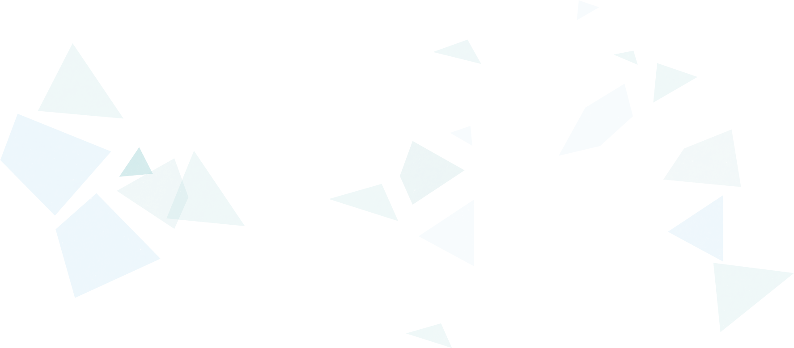
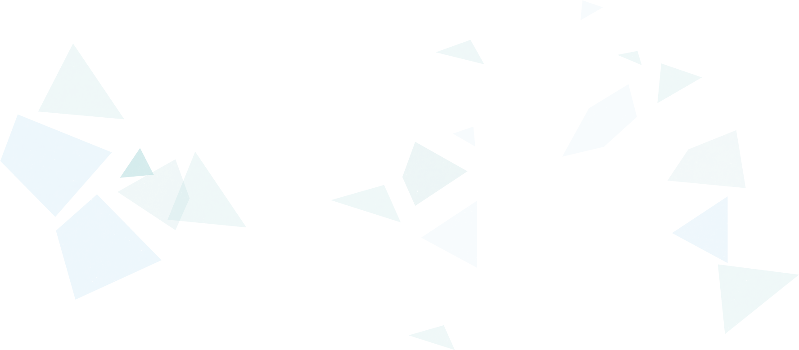

ประเพณีแต่โบราณ
"พิธีไหว้บรรพบุรุษ"
โบราณมีความเชื่อว่า ที่อยู่อาศัยนั้นมีผีบ้าน
ผีเรือน อีกทั้งเชื่อว่าบรรพบุรุษอันได้แก่ ปู่ย่าตายาย
ยังคอยคุ้มครองดูแลถ้าจะทำการใด ๆ จะต้องบอก
กล่าวเป็นการขอขมาลาโทษหรือให้รับรู้ว่ามีบุคคลอื่น
มาเป็นเขย มาเป็นสะใภ้ จึงจัดพิธีไหว้ผีโดยนำสิ่งของ
มาเส้นบวงสรวง ได้แก่ กินสี่ถ้วยนั่นเอง


ว้าวววววววววววว

มะลิลอยหมายถึงความรักเบ่งบาน
ไข่กบหมายถึงมีลูกเต็มบ้าน
มีหลานเต็มเมือง
นกปล่อยหมายถึงความรักยืนยาว
อ้ายตื้อหมายถึงรักแน่นเหนียว


ทำไมถึง
เริ่มเลือนลาง
ด้วยยุคสมัยที่มีการแต่งงานเน้น
ประเพณีแบบชาติตะวันตกมากขึ้น
อีกทั้งการทำขนมนั้นมักมาคู่กับ
การเตรียมเครื่องเซ่นชนิดอื่น
การเตรียมการจึงยิ่งทวีความยาก


 
